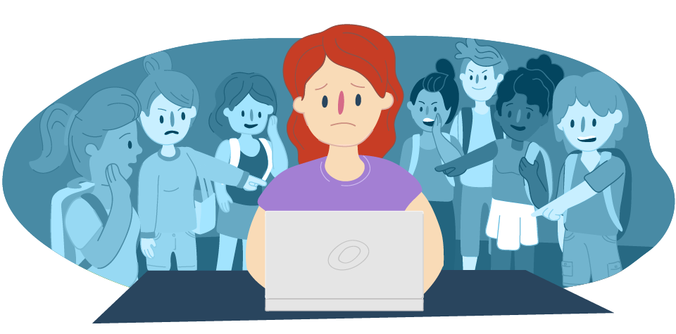
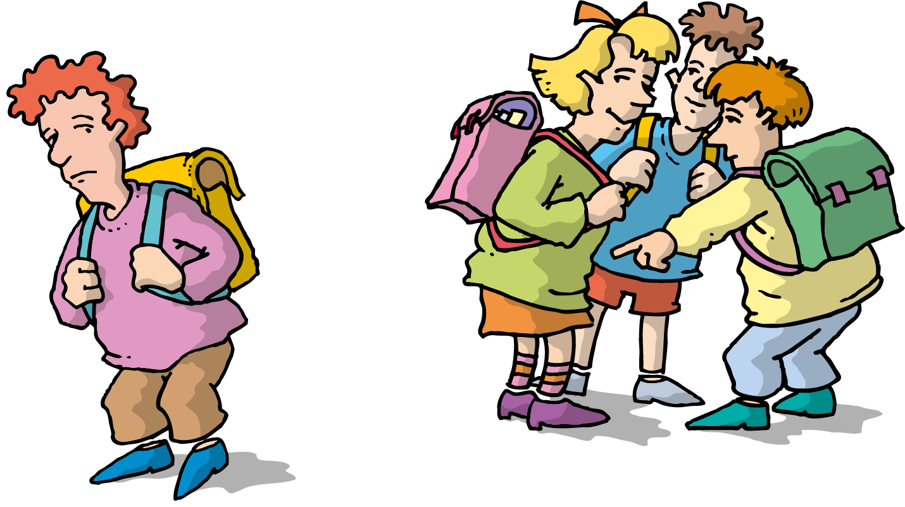

| What is Cyberbullying? | Methods cyberbullies use | Effect of cyberbullying | What make cyberbully | Protect from cyberbullying |
What is cyberbullying? Cyberbullying is bullying with the use of digital technologies. It can take place on social media, messaging platforms, gaming platforms and mobile phones. It is repeated behaviour, aimed at scaring, angering or shaming those who are targeted. Examples include:
Face-to-face bullying and cyberbullying can often happen alongside each other. But cyberbullying leaves a digital footprint – a record that can prove useful and provide evidencel |
|---|
Methods cyberbullies use |
|---|
|  |
Click for more Details |
Effect of cyberbullying |
|---|
|
When bullying happens online it can feel as if you’re being attacked everywhere, even inside your own home. It can seem like there’s no escape. The effects can last a long time and affect a person in many ways:
Click for more Details |
| What makes a cyberbullying |
|---|
| The cyberbullying wants revenge for harm that has been done to them. It is rarely the person they bully who caused the harm. |  | They turn their own unhappiness and insecurity on to someone else. |
| They want other people to like and admire them. | They are jealous of the person they bully. | |
| Online bullying allows the bully to be anonymous so they beileve they can get away with their bullying. | The cyberbullying feels thretened by people who are different to themselves. |
| Protect from cyberbullying |
|---|
| Turn on privacy setting | One of the best and easiest ways to prevent social media harassment is by simply turning on your privacy settings. Almost all social media platforms can control how a profile appears to other users. For example, whether profile pictures and posts are made public or private. | |
|---|---|---|
| Safeguards all passwords | Some scenarios around social media harassment do not involve loud bullying and shaming. Some cyberbullies work more discretely and try to obtain their victim's passwords to access their accounts in hopes of using an account to commit fraud or cause chaos. | |
| Avoids responding | This tip can be hard to follow in the heat of the moment, but it's crucial to remember. Ignoring a bully and refusing to respond can be the difference between escalating an already dangerous situation or staying safe. The truth is that even the simplest of responses can be the spark that draws the harasser to continue their attacks. In the end, such an emotional war on social media can result in sharing hurtful insults, leading only to regret. | |
| Don't be afraid to block abusers | In cases where a situation rapidly escalates, blocking that person can be a good idea. With just a few clicks, blocking a bully can quickly halt their access to your account activity and stop further harassment. Luckily, most social media platforms follow the same method when blocking someone: Press the three dots in the person's profile and press block. | |
| Report Cyberbullying | Social media bullying can take multiple forms. For example, TikTok, the social media video platform, has a comprehensive set of community guidelines to help identify and prevent cyberbullying and hateful behavior. In cases of social media harassment, it's a wise decision to document every interaction and then report those findings to the platform moderators. | |
| Carefully Screen All Friend Requests | As the world becomes engulfed in social media, it's become increasingly common to send friend and follower requests to just about anybody. It's critical, however, to thoroughly screen and check all friend/follower requests before accepting them. | |
| Pause a Moment Before Posting | Before posting anything online, no matter how trivial, it pays to take a moment to reflect and carefully consider if this is something that should be shared with the world. Many people rely on social media as a medium for human connection, so it can be all too easy to overshare and reveal sensitive information. |